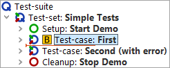
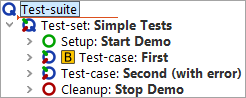
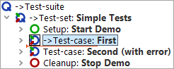

| Version 6.0.3 |
First of all we need to activate debugging mode. There are several ways
to do so. One of them is to set a breakpoint at the node where we want to
have a closer look. When the test is being executed and QF-Test comes to the break
point it will then
pause and switch into debugging mode. The pause button  will then
be activated.
will then
be activated.
|
|  | ||
|
| Figure 23.1: Set break point | ||
|
|  | ||
|
| Figure 23.2: Start test run | ||
|
|  | ||
|
| Figure 23.3: Remove break point | ||
Instead of using the keyboard shortcut [Ctrl-F8] you may also set or unset a breakpoint by clicking the node and selecting the »Debugger«-»Breakpoint on/off« menu item, or alternatively right-clicking the node and selecting the »Breakpoint on/off« context menu item.
Again, you can see the little arrow, which now marks the next node to be executed, called the current node. When entering debugging mode QF-Test also navigates to the current node, in case it had not been visible, and selects it, highlighting it blue.
The menu option »Debugger«-»Clear all breakpoints« is useful to remove all breakpoints set in your test-suite.
There is no limit to the number of breakpoints you can set in your test-suite, but note that breakpoints are not saved with the test-suite.
| Last update: 9/6/2022 Copyright © 2002-2022 Quality First Software GmbH |